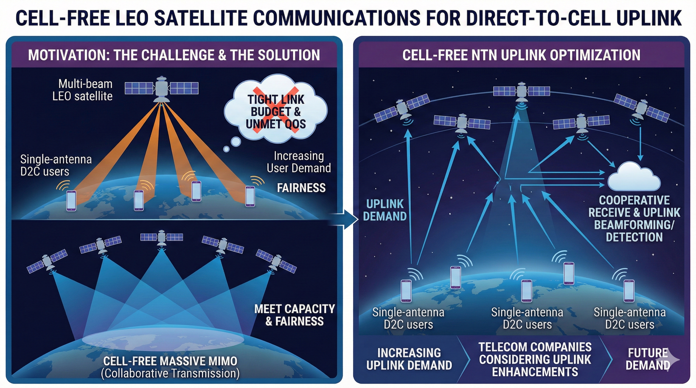

Low Earth Orbit (LEO) Satellite Communications
Status: Past (2024.07 - 2025.07)

Why use cell-free (CF) concepts in LEO satellite communications, or rather, why do multi-satellite collaborative transmission? When considering direct-to-cell (D2C) users, i.e., single-antenna users, we found that the existing multi-beam satellite communication link budget is very tight and may not be able to meet quality of service (QoS) requirements, especially with the increasing number of users using satellite communication services. To meet greater capacity requirements and for fairness considerations, we adopted the concept of CF massive MIMO from terrestrial networks.
Cell-free NTN Uplink Optimization
Until I finished this work, most of the work involved downlink optimization. However, we believe that uplink demand will also increase. In particular, to my knowledge, some telecommunications companies are considering uplink enhancements.
Useful Resources
- Related Publications
-
GitHub Repository
- To appear (after graduation)